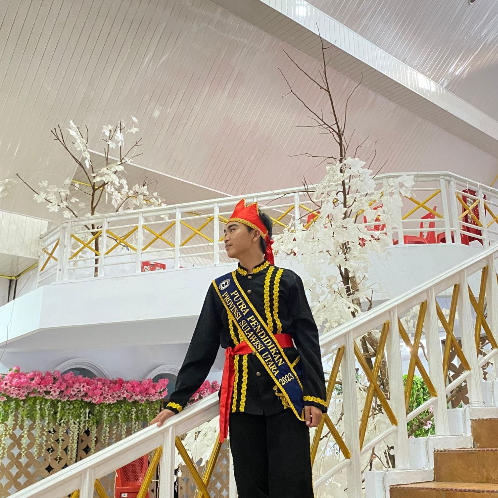
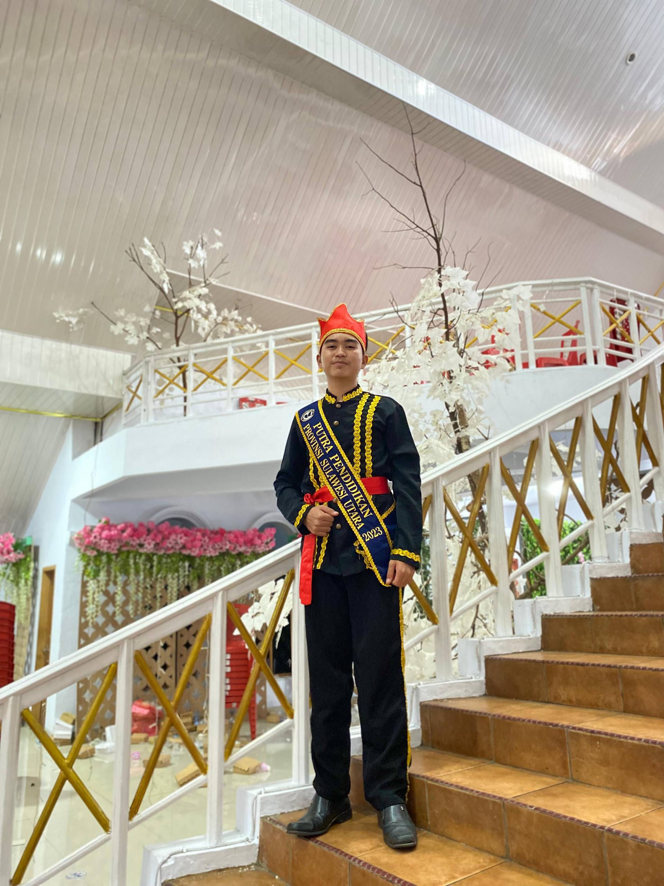
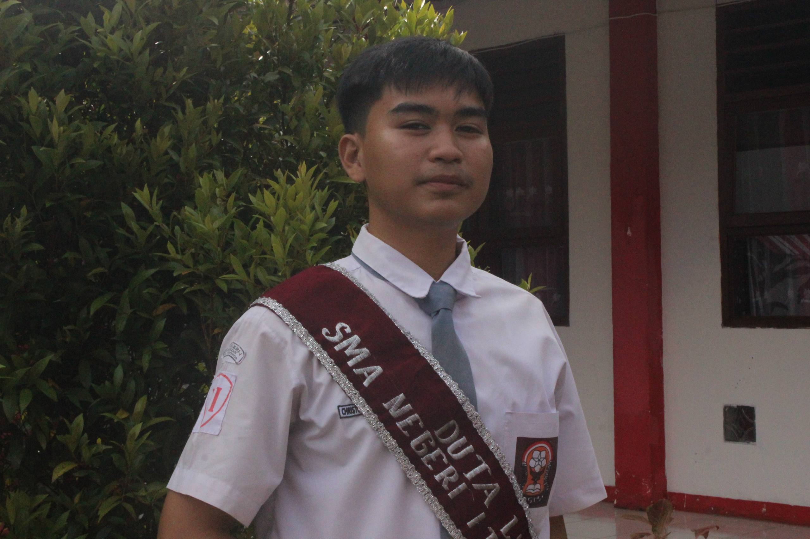

2023
♻️ Zero Waste Organization
Served as Head Secretary and helped lead initiatives turning organic waste into compost and non-organic waste into creative decorations.
Hi, I'm Christoford Novert, an Informatics Student at Universitas Sam Ratulangi. I explore AI, digital technology and environmental innovation to turn ideas into meaningful impact.

I believe technology becomes more valuable when it solves real problems and creates positive change.
“The most meaningful lines of code are those that create tangible impact for both civilization and our ecosystem.”
My interests sit between programming, generative AI, leadership, public speaking and environmental sustainability. I enjoy transforming ideas into practical concepts and learning through communities, competitions and collaborative projects.
From environmental innovation to technology and AI, each experience shaped the way I think and build.


Served as Head Secretary and helped lead initiatives turning organic waste into compost and non-organic waste into creative decorations.
Joined the Youth Scientific Writing Group (Kelompok Karya Tulis Ilmiah Remaja), practicing the creation of scientific papers for competitions and mentoring new students in developing effective scientific writing skills.
Actively participated in the Youth Red Cross organization, engaging in humanitarian, health, and community service activities to promote discipline and social responsibility.
Joined the Scout Organization (Pramuka), actively participating in leadership, outdoor activities, and community service to foster teamwork, discipline, and resilience.
Click a project to see a short story behind the idea.
Rooftop rain is guided through a gutter, filtered, then stored — turning runoff into a daily water source.
Organic waste is cycled through a compost house and returned as fertilizer — closing the loop instead of throwing it away.
Sensors read the river in real time and an AI model raises the right levee segments before water overtops the bank.
Competitions, certifications and experiences that continue to shape my skills. Click a card to see the full photo.
Participation in national scientific writing competition.
Provincial scientific writing competition.
Technology and AI debate competition.

Provincial competition for education ambassador selection.

Recognition as environmental ambassador at SMA Negeri 1 Tomohon.
Microsoft AI Tech training.
Cybersecurity career awareness micro skill.
UNECE environmental monitoring course.
Futuristic Ideas category.
UNICEF child protection and safeguarding course.
Beyond technology and leadership, my walk of faith through GMIM has shaped who I am — teaching humility, consistency, and service at every level of the church community.
GMIM Wilayah Tomohon II
The first step of the journey — first place among exemplary youth representing part II of the Tomohon region, where consistency in faith first began to bear fruit.
📷 Tap to view photo
GMIM Rayon Tomohon
The journey widened — first place representing exemplary youth across the entire city of Tomohon, a step up in scope and responsibility.
📷 Tap to view photo
GMIM Sinode
The summit of the journey — first place as the most exemplary youth across every GMIM region throughout North Sulawesi, the fruit of years of faith, discipline, and character.
📷 Tap to view photo
Lomba Baca Mazmur — Sinode GMIM
Took part in the Psalm Reading competition at Synod level, engaging Scripture through voice, rhythm, and heartfelt expression.
📷 Tap to view photo
Lomba Pidato Rohani Bahasa Inggris — Sinode GMIM
Delivered a religious-themed speech in English at Synod level, combining faith conviction with public speaking skill.
📷 Tap to view photo
Lomba Pidato Rohani Bahasa Indonesia — Sinode GMIM
Delivered a religious-themed speech in Indonesian at Synod level, sharing faith and conviction in the national language.
📷 Tap to view photo
💡 Tap any card to flip it around and reveal the photo — tap again to flip it back.
A snapshot of the experiences and achievements represented in this portfolio.
Interested in technology, AI, environmental sustainability or digital literacy? Let's connect.